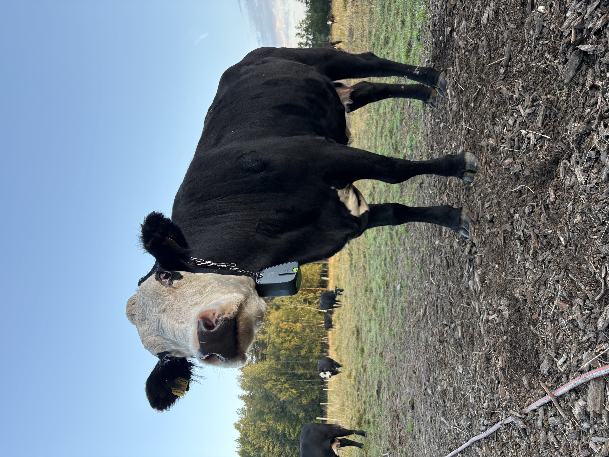
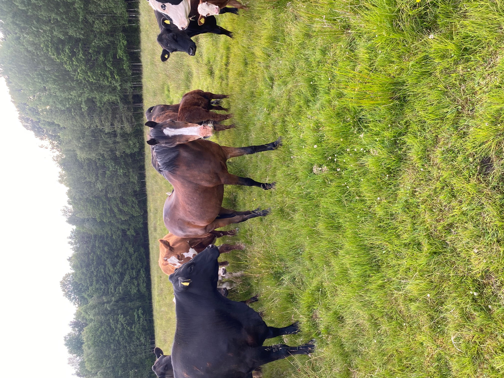

Välkommen till Gunnarsbergs Ekolantbruk. Här möts omtanke om djuren, kärleken till naturen och glädjen i att producera mat med ett tydligt ursprung.
Välkommen till gårdenVid vackra Norra Hästefjorden i Frändefors ligger Gunnarsbergs Ekolantbruk. Här driver Christian Håkansson ett lantbruk med dikor och kalvar.
Vi vill att det ska kännas personligt och tryggt att veta var maten kommer ifrån. Hos oss är djuren, naturen och det långsiktiga arbetet på gården alltid i centrum.

Gunnarsbergs är en plats där vardagen följer årstiderna och där arbetet med djuren är en naturlig del av livet.
Här vill vi kombinera ett ansvarsfullt lantbruk med en personlig känsla. En gård att vara stolt över och en plats som vi gärna delar med andra.
På Gunnarsbergs finns dikor och deras kalvar. Djuren är hjärtat i verksamheten och deras välmående är viktigt i det dagliga arbetet.
Genom bilder från gården vill vi visa både djuren och miljön där de lever.

Vi vill göra det enkelt att köpa kött med tydligt ursprung, direkt från gården.
200 kr/kg
Detta är ett exempel för hemsidans testversion. Pris och innehåll är inte fastställda. Ingen beställning görs via sidan ännu.
Följ med ut bland djuren, betesmarkerna och den vackra naturen runt gården.